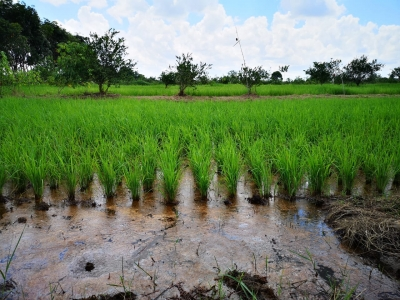

WebGIS Pangan Batola
🌾
Peta Produksi Pangan Unggulan Kab. Barito Kuala
17 Kecamatan
Komoditas
Padi
Jagung
Kedelai
Kacang Hijau
Ubi Kayu
Ubi Jalar
Hover
juga kecamatan utk detail,
klik
utk zoom & tabel produksi
Satuan: Ton / Tahun